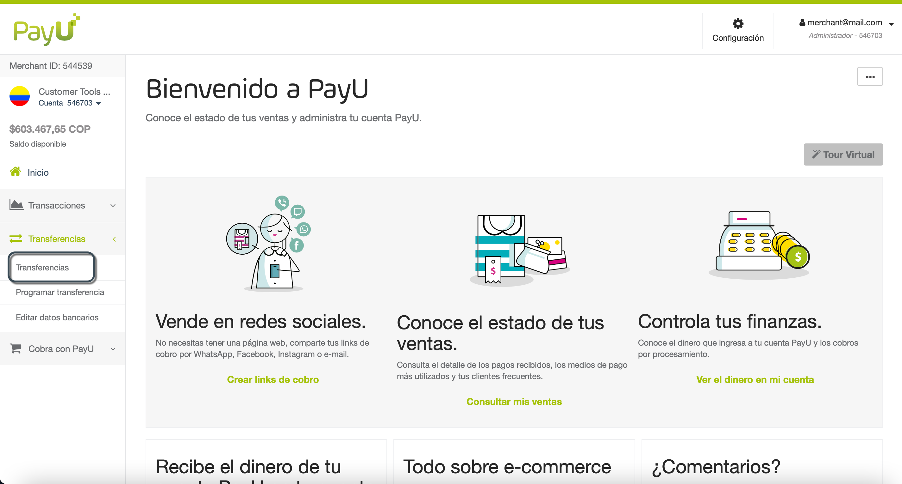
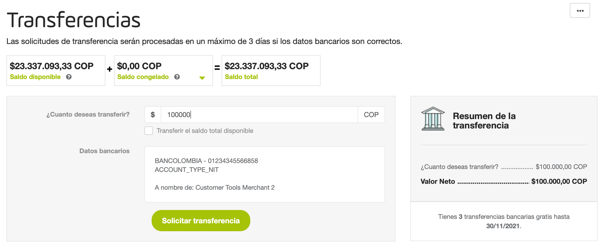
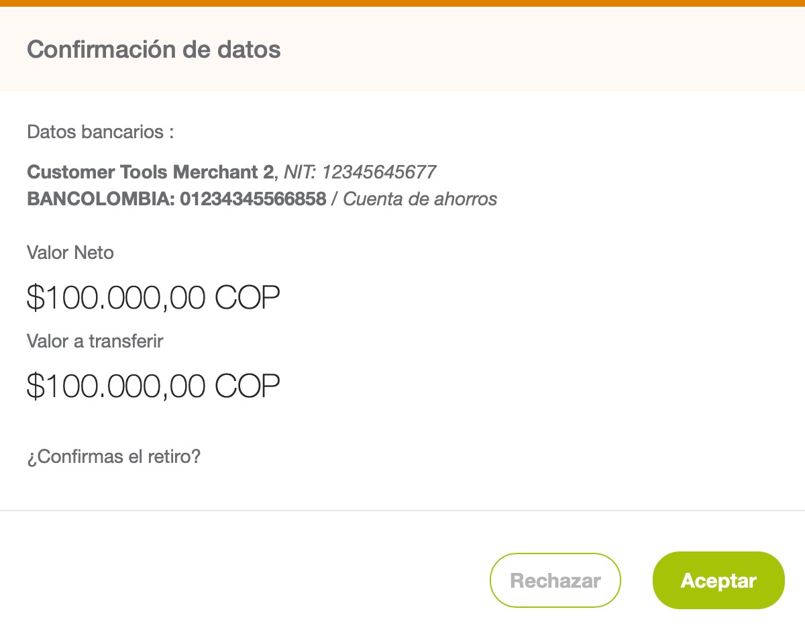
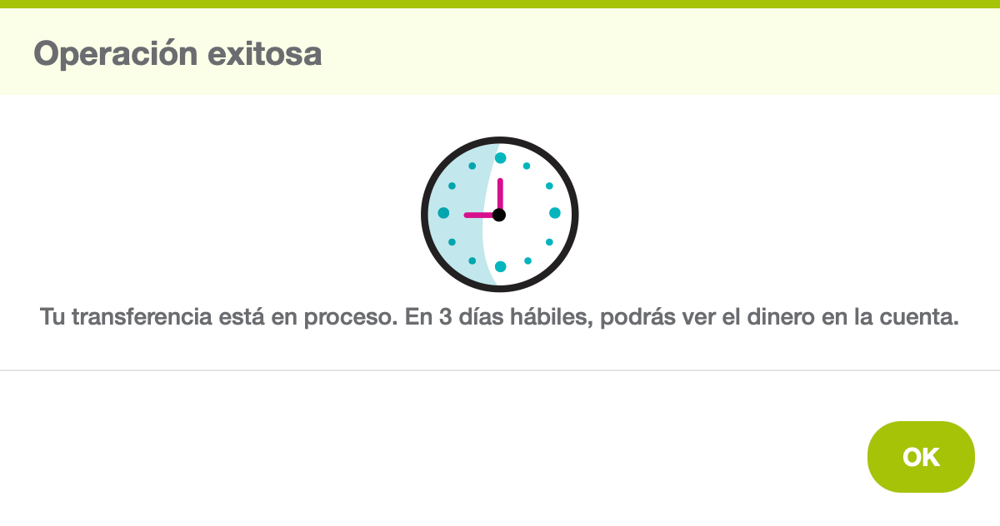
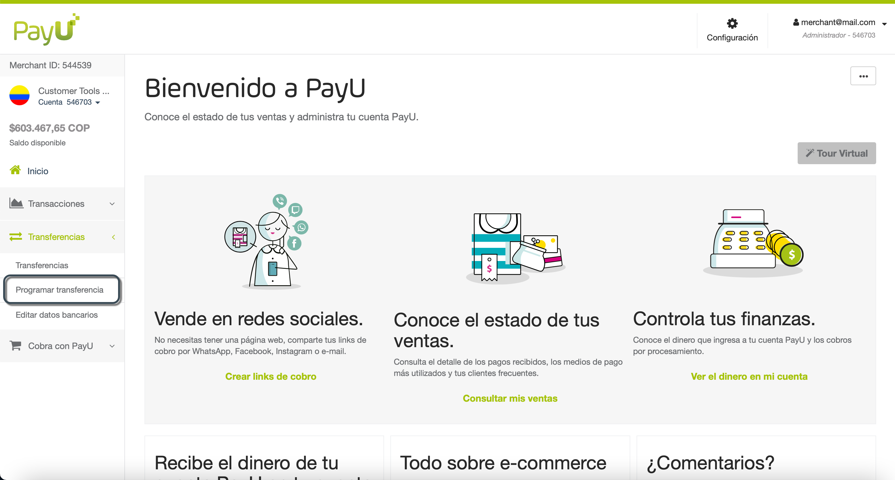
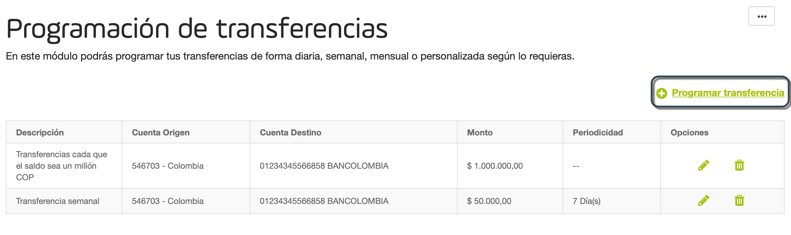
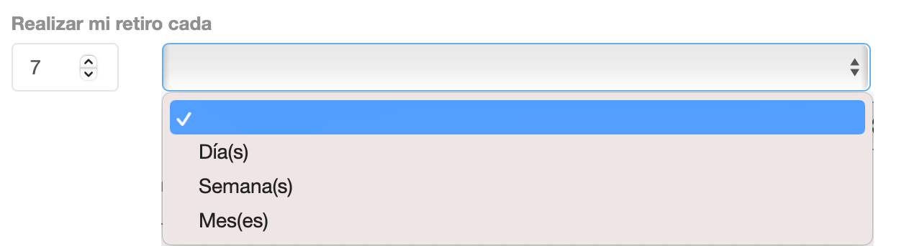
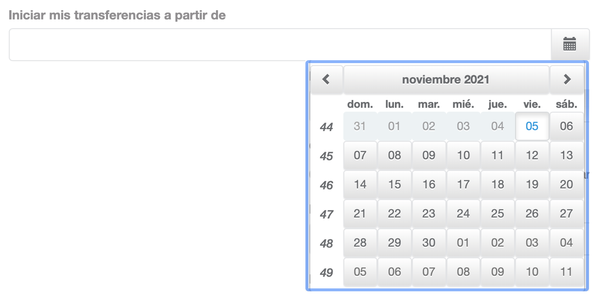

Transferencias
En el módulo de Transferencias, puede encontrar las opciones para transferir los fondos recaudados en tu cuenta PayU virtual a tu cuenta bancaria principal registrada.
Consideraciones
Ten en cuenta las siguientes consideraciones antes de transferir fondos a tu cuenta bancaria.
- Debes tener tu información bancaria actualizada y validada. Ten en cuenta que si has solicitado la actualización de tu cuenta bancaria, las transferencias que realices se envían a la cuenta bancaria anterior hasta que nuestro equipo de Riesgos la haya validado.
- Como PayU en Brasil no es una institución de pago, los fondos recaudados en tu cuenta PayU se transfieren a tu cuenta bancaria diariamente de forma gratuita. Para consultar el estado de estas transferencias, utiliza la opción Transferencias diarias (Transferencias > Transferencias diarias).
- Las tres primeras transferencias locales realizadas durante el primer mes son gratuitas. Desde la cuarta solicitud de transferencia, PayU cobra los siguientes valores:
- Colombia: 6.500,00 COP + VAT (Colombia)
- Perú: 10,00 PEN + IGV (Perú),
- Argentina: $ 10,00 ARS+ IVA (Argentina),
- Chile: 0,00 CLP
- México: 0,00 MXN
- La primera transferencia demora cinco (5) días en depositarse en la cuenta bancaria. El área de Riesgo de PayU solicita un sustento de las ventas en la primera transferencia como proceso administrativo.
- La segunda y las siguientes transferencias toman un máximo de tres (3) días hábiles.
- Las transferencias se pueden programar por Monto y por Fecha
Nota
Los tiempos y montos explicados aquí aplican solo para transferencias locales (al mismo país de operación) para transferencias internacionales, comunícate con tu representante de ventas.Permisos requeridos
Para tener acceso a este módulo, necesitas un perfil con los siguientes permisos activos:
- Transferencias > Consultar
- Transferencias > Administrar
Este permiso te permite realizar transferencias.
Consulta Perfiles y Permisos para más información.
Transferir fondos
Puedes transferir hasta el monto total en tu cuenta PayU al banco registrado. Sigue estos pasos para realizar una transferencia.
- Inicia sesión en tu cuenta PayU. En el menú de la izquierda, expande el menú Transferencias y selecciona Transferencias.

- Completa el valor para transferir o seleccione la opción Transferir el saldo total disponible. En el panel derecho, se actualiza el valor ingresado; Además, este panel muestra cuántas transferencias gratuitas tienes hasta el final del mes.
Si no tienes transacciones gratuitas, este panel también muestra el valor de la transacción junto con los impuestos.

- Haz clic en Solicitar transferencia. Aparece una ventana de confirmación para confirmar el monto a transferir, el valor a debitar de tu cuenta y la cuenta de destino.
Haz clic en Aceptar para confirmar o en Rechazar para descartar la operación.

- Aparece el resultado de la operación. Ten en cuenta la cantidad de días para reflejar el dinero en la cuenta objetivo.

Tan pronto como la solicitud ha sido enviada con éxito, la transferencia está en estado En proceso y puedes verla en la sección Reporte de transferencias realizadas al final del módulo; Además, la cantidad solicitada se debita de tu saldo.
Si las transferencias no pudieron ser procesadas, esta cantidad se regresa a tu cuenta y no se cobra ninguna tarifa por esta operación.
Programar transferencias
Puedes automatizar las transferencias y solicitar el retiro dado un monto fijo o cada cierto tiempo.
Nota
 Programar transferencia no está disponible para Brasil.
Programar transferencia no está disponible para Brasil.- Al programar transferencias, debes tener fondos suficientes para el momento en que se ejecute la transferencia.
Para programar una transferencia, sigue estos pasos.
- Inicia sesión en tu cuenta PayU. En el menú de la izquierda, expande el menú Transferencias y selecciona Programar transferencia.

- Se abre el módulo de Programación de transferencias, aquí puedes ver todas las transferencias programadas que tienes configuradas. Haz clic en Programar transferencia para configurar una nueva.

Opciones
La columna opciones tiene las siguientes acciones:
- Editar (
 ): te permite cambiar la configuración de la programación.
): te permite cambiar la configuración de la programación. - Eliminar (
 ): le permite desactivar la programación. Una vez que se elimina, no se pueden crear transferencias automáticas.
): le permite desactivar la programación. Una vez que se elimina, no se pueden crear transferencias automáticas.
- Selecciona cómo deseas programar la transferencia.
-
Programar transferencias por periodicidad
Esta opción te permite transferir una cantidad determinada cada cierto tiempo (días, semanas o meses). Para programar este tipo de transferencias, selecciona la opción Periodicidad. -
Programar transferencias por saldo disponible
Esta opción te permite transferir una cantidad determinada cada vez que el saldo alcanza un valor específico. Para programar este tipo de transferencias, selecciona la opción Saldo disponible.
Ingresa las siguientes opciones.
| Opción | Descripción |
|---|---|
| Realizar mi retiro cada | Selecciona la periodicidad de las transferencias que deseas programar. Esta opción está disponible para transferencias programadas por periodicidad.  |
| Cantidad de dinero que deseas retirar | Selecciona la cantidad que deseas transferir, puedes seleccionar el saldo total disponible o un valor fijo. |
| Ingresa el valor a retirar | Selecciona la cantidad que deseas transferir. Este campo aparece al seleccionar la opción Configurar valor. |
| Iniciar mis transferencias a partir de | Seleccione la fecha de inicio de la programación. En esta fecha está programada la primera transferencia.  |
| Descripción | Ingresa una descripción significativa de tu transferencia. |
- Cuando termines, haz clic en Programar Transferencia.